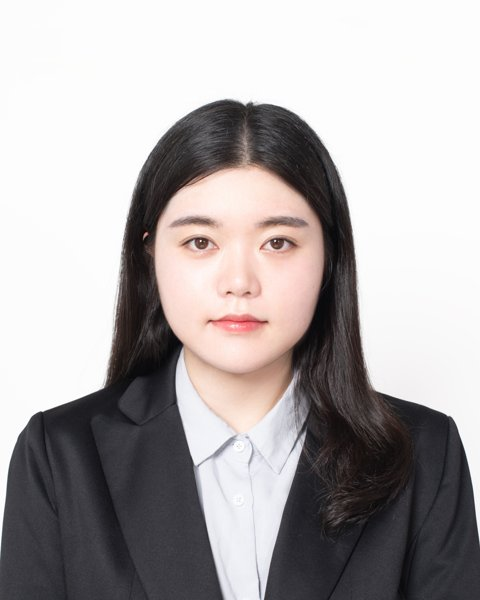

아이디어와 화면 사이의 거리를좁히는 기획자입니다.
기획자를 꿈꾸면서, AI를 활용하여 기획 초안의 회전 속도를 높이고 Figma로 설계한 화면을 직접 구현까지 이어가며 기획의 타당성을 검증해왔습니다. 그 과정에서 사용자가 실제로 쓰는 화면이 되려면 무엇이 필요한지 몸으로 익혔습니다.

기획자를 꿈꾸면서, AI를 활용하여 기획 초안의 회전 속도를 높이고 Figma로 설계한 화면을 직접 구현까지 이어가며 기획의 타당성을 검증해왔습니다. 그 과정에서 사용자가 실제로 쓰는 화면이 되려면 무엇이 필요한지 몸으로 익혔습니다.
